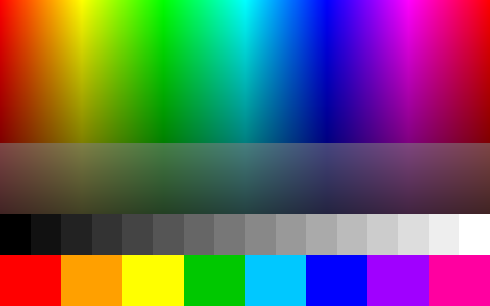
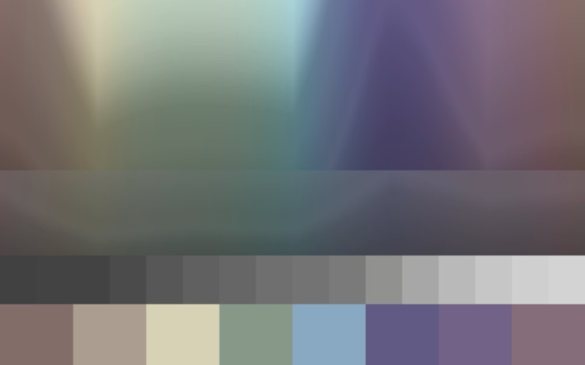

Source image

Simulated panel

panel-model/panel_sim.py, the forward colour model fitted from a photo of the panel. A simulation of how the panel renders colour, not a photo of the device.I set
- Static first, device second
- Read-only before write
- The first write was a known-safe one
Agents wrote
most of the code and analysis
I checked
- 314 files pass CRC-32 and header checksums
- Captured frames compared with decoded waveforms
- Limit: One tablet, one OS version
Interoperability research that worked out how the reMarkable Paper Pro drives its colour e-ink panel, from the waveform files on disk to the bits in each frame, well enough to draw on the screen with our own code instead of the vendor's library.
- Public OS update filenot included in the repository
- Decode the waveformsbyte mask, header and LZ77, to the standard format
- Static analysisthe rendering library is read, never run
- Read-only capturestock UI frames checked against the decoded waveforms
- Frame planhashed and bound to a temperature window
- Writerone page flip per vblank, on the panel
Frames per screen update
At an 85 Hz design rate; the colour figure is at room temperature.
The problem
The tablet's screen is driven by a closed library. Without knowing what that library sends to the panel, nobody can write software that draws on the display directly, test how its update modes behave, or reason about colour.
The risk is real: driving an e-ink panel with the wrong signals can leave permanent ghosting or damage it.
What I directed
I set the goals, the safety rules and the acceptance checks, ran the device steps, and judged the results on the panel. The agents wrote most of the code and the analysis.
- Static first, device second. Everything that could be learned from the public software update was learned there before touching the tablet. The device was used to confirm, not to explore.
- Read-only before write. The capture tool never takes control of the display. Writing came only after the decoded files predicted the frames the stock software actually sends.
- The first write was a known-safe one. It replayed a sequence the panel already receives at every boot.
- No vendor code during a draw. Frames are built off the device; the tablet only plays frames whose hashes check out.
- Protect the panel by design. Each plan is built so every pixel's drive nets to zero or close to it, and the player refuses a plan built for a different temperature band.
How the results were verified
- All 314 waveform files decode and pass their CRC-32 and header checksums.
- A checker compared frames captured from the stock software against the decoded waveforms, with synthetic self-tests for the checker itself.
- Each finding is labelled by evidence level: verified on the device, verified by static analysis only, or inferred and not yet verified.
The outcome
Our own frames drew on the panel: a boot-sequence replay, a black-and-white test card, colour cards in three update modes, a partial update with no full clear, and two grey levels.
The repository ships the decoders, the frame builder, a tablet-side player with a watchdog, and a written specification of the waveform format. No vendor code, firmware or waveform data is distributed.
Honest limits
- Tested on one tablet, one OS version (3.27.3.0), near room temperature.
- Not yet verified: the voltage per drive value, a high-temperature mode switch, the dither's exact match with on-device output, and the colour accuracy of each swatch.
- Unofficial research, not affiliated with reMarkable or E Ink. The write path is at the user's own risk.
ryanwisth/paper-pro-display-reThe code, with its real status and limits.
View the repository →